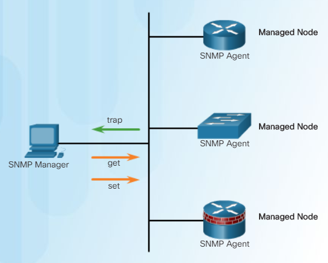

SNMP
(Simple Network Management Protocol)
類似 Syslog，SNMP Agents 會將 log 發給 SNMP Manager，同時 Manager 也可以查詢和設定 Agents.
It enables network administrators to Monitor and Manage network performance, find and solve network problems, and plan for network growth. It's a Layer-7 protocol.
It provides secure access to devices by authenticating and encrypting packets over the network.
snmp-server community Macau ro s_ACL
snmp-server host 192.168.1.10 version 2c Macau
snmp-server enable traps
ip access-list standard s_ACL
permit 192.168.1.10
● "ro" Read-only, manager 可唯讀 MIB variables.
● "rw" Read-wirte, manager 可讀寫 all objects in MIB.
● "Macau" is community string.
● "s_ACL" 定義誰人可以 get (poll for) MIB.
● "host" defines where are traps going to.
● "enable trap", by default SNMP disable traps.
"poll" 類似 get，是 manager 問 agents 攞資料。
"trap" 是 agents 自動向 manager 發送 log.
"MIB" Management Information Base, 每個 SNMP agent 都有自己的 MIB。
Optional setting :
snmp-server location Mo_manager"
snmp-server contact Wayne world
● 都係改名。
show snmp
Download and install ManageEngine MIB browser on PC.